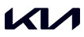
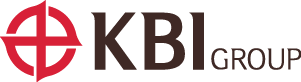

in Story & News
회원사
Headline
미스토홀딩스

휠라홀딩스 사명 변경… ‘미스토홀딩스’(Misto Holdings)로 새롭게 출범
㈜휠라홀딩스는 3월 31일 주주총회에서 사명을 주식회사 미스토홀딩스로 변경하는 안건을 의결했다. 미스토홀딩스는 이번 사명 변경을 통해 기존 단일 브랜드 이미지의 한계에서 벗어나 글로벌 브랜드 포트폴리오 기업으로서의 정체성을 더욱 강화할 계획이다. 사명 변경과 무관하게 미스토홀딩스 아래 전개 중인 휠라를 비롯한 모든 브랜드는 기존과 같이 독립적으로 운영한다.
새로운 사명인 미스토(Misto)는 ‘조화’ ‘혼합’ ‘다양성’을 뜻하는 이탈리아어로, 다양한 가능성을 연결하고 새롭고 창의적인 방식의 변화를 이끌어 내고자 하는 의지가 담겼다.
미스토홀딩스는 사명 변경과 함께 새로운 기업 컬러와 로고를 개발하는 한편 ▲Synergetic ▲Empowering ▲Resilient ▲Responsible을 새로운 기업의 4대 핵심 가치로 설정했다. 또한 한계를 뛰어넘고 재정의한다는 뜻을 담아 기업 아이덴티티 및 슬로건을 ‘Redefining Boundaries’로 삼고, 브랜드 간 시너지를 창출하고 모든 가능성을 포용하며 사업 영역을 확대해 나갈 예정이다.
한편 미스토홀딩스는 공식 홈페이지를 새롭게 개편해 공개했다. 향후 기존 고객과의 원활한 소통을 위해 다양한 채널에서 관련 정보를 지속적으로 제공할 예정이다.
KG그룹
KG그룹, 창립 40주년 기념행사 개최… 새로운 100년을 향해 도약
KG그룹은 8월 30일 서울 삼성동 코엑스에서 창립 40주년 기념행사를 개최했다. 9월 1일 창립기념일을 앞두고 열린 이번 행사는 지난 40년간의 도전과 성장의 여정을 돌아보며 임직원과 함께 지속 가능한 미래 100년을 향한 새로운 도약을 다짐하는 뜻깊은 자리로 마련됐다.
‘함께한 40년, 함께할 100년’을 슬로건으로 열린 이번 행사에는 1,500여 명의 임직원과 가족이 참석해 KG의 창립 정신을 되새기고 사회공헌과 ESG 실천, 미래 비전을 공유했다. 재단법인 선현의 장학금 수여식에서는 전국 각지에서 선발된 미래 인재와 소방 영웅 등 총 27명에게 장학금이 전달됐다. 지금까지 선현장학금을 통해 지원받은 학생은 1,000여 명, 누적 장학금 규모는 18억 원에 달한다. 이는 KG의 ESG 경영 실천과 지속적인 사회공헌 비전을 대표하는 프로그램으로 자리 잡았다.
이번 KG그룹 창립 40주년 행사는 단순한 기념식을 넘어 KG의 역사와 철학, 사회적 책임과 문화예술, 그리고 임직원과의 동행을 모두 아우른 미래 비전의 플랫폼이 됐다. KG그룹은 이번 행사에 장학금 수여, 임직원 합창단, 오케스트라, 1호 사원 등 열정과 도전을 이어가는 KG의 정체성을 담아 미래 100년을 위한 신뢰와 연대의 메시지를 전했다.
KG그룹은 앞으로도 자동차, 철강, 화학 등 주력 산업에서의 경쟁력 강화를 넘어 교육, 문화, 환경 등 사회 전반에 긍정적 영향을 끼치는 ‘존경받는 기업, 자랑스런 회사’의 비전을 실현해 나갈 계획이다.
기아
기아, 다문화 청소년 위한 ‘하모니움’ 자립 지원 교육
기아는 다문화 청소년의 자립과 안정적인 사회 진출을 지원하고자 2025년 4월 ‘하모니움(Harmonium) 교육 프로그램’을 공식적으로 론칭했다. ‘하모니움’은 ‘조화’를 의미하는 ‘하모니’(Harmony)와 ‘새싹이 돋다’를 의미하는 ‘움트다’의 합성어로, 다양한 문화적 배경을 가진 미래 세대가 조화롭게 하나 되어 다 같이 성장하고 발전하는 사회를 이루어 간다는 의미를 담고 있다.
해당 프로그램은 IT, F&B, 영상 편집, 조경 등 4개 특화 분야를 중심으로 진로 설계에 도움이 되는 교육과 실습뿐만 아니라 우수 소셜 벤처 및 스타트업과의 협력을 통한 인턴십 기회도 제공하고 있다. 기아는 다문화 청소년들이 주도적으로 진로를 계획하고 실질적인 취·창업 역량을 강화해 건강한 미래 세대로 성장할 수 있도록 지속적으로 지원할 계획이다.
SPC그룹

SPC그룹, 환경공무관 2,600명에 1억 3,000만 원 상품권 전달
SPC그룹은 폭염 속에서 시민들의 쾌적한 생활 환경 조성을 위해 헌신하는 환경공무관(미화원)들의 노고에 감사의 마음을 전하고자 7월 29일 총 1억 3,000만 원 상당의 SPC 상품권을 전달했다. SPC그룹은 서울 성동구에 위치한 서울시청노동조합 사무소에서 열린 상품권 전달식을 통해 주성준 서울시청노동조합 위원장에게 대표로 수여했다. 전달된 상품권은 SPC그룹이 운영하는 파리바게뜨, 배스킨라빈스, 던킨, 파스쿠찌 등 전국 6,600여 개 매장에서 자유롭게 사용할 수 있다.
도세호 SPC그룹 대표이사는 “연일 이어지는 무더위에도 곳곳에서 묵묵히 애쓰시는 환경공무관들에게 진심으로 감사드린다”며 “앞으로도 보이지 않는 곳에서 헌신하는 우리 사회의 숨은 영웅들을 꾸준히 응원하겠다”고 말했다.
GS건설
GS건설 ‘자이랩’, 2025 레드닷 디자인 어워드 본상 수상
GS건설의 자이 브랜드 갤러리 ‘하우스자이’(House Xi)에 마련된 미래 주거 기술 체험 공간 ‘자이랩’(Xi Lab)이 세계 3대 디자인 어워드인 ‘2025 레드닷 디자인 어워드’에서 브랜드&커뮤니케이션 부문 위너(Winner)에 선정됐다. 자이랩은 자이만의 미래지향적 주거 철학을 고객들이 실제 경험할 수 있도록 설계된 공간이다. GS건설은 자이랩을 통해 소리, 공기, 빛이라는 삶의 본질적인 요소를 정밀하게 조율하는 ‘캄테크’(Calm Tech) 기술을 구현해 입주민이 ‘온전한 나’로 살아갈 수 있는 쾌적하고 감성적인 주거 환경을 선보였다.
한편 GS건설은 올해 3월 독일의 국제 디자인 공모전 ‘iF 디자인 어워드 2025’에서도 2개 부문에서 본상을 수상하는 등 리브랜딩 이후 자이가 구축한 브랜드와 디자인 경쟁력을 국제적으로 인정받는 성과를 거뒀다.
도레이첨단소재
도레이첨단소재, 자매부대에서 병영 체험 진행 및 1,000만 원 발전기금 전달
도레이첨단소재는 자매부대인 제5포병여단과 함께 8월 5일부터 6일까지 1박 2일간 임직원과 초등학생 자녀 40여 명이 참석한 병영 체험 행사를 실시했다. 참여자들은 첫째 날에 화기, 자주포, 전투 물자 등 각종 전투 장비와 부대 생활관에서의 숙박을 체험했으며 둘째 날에는 땅굴, 평화전망대, 철원역사문화공원 등 DMZ 평화 관광을 통해 국가 안보와 평화의 중요성을 되새겼다. 도레이첨단소재는 장병들의 사기 진작과 복지 증진을 위해 자매부대에 지난 4월에 이어 추가로 1,000만 원의 발전기금을 전달했다.
이번 병영 체험에 참여한 도레이첨단소재 직원들은 “자녀와 함께 병영 문화를 체험하며 국방의 소중함을 체감하는 계기가 됐다”며 “국토 방위를 위해 애쓰는 장병들에게 감사의 마음을 전한다”고 소감을 밝혔다.
삼양라운드스퀘어

불닭 소스, ‘판다 익스프레스’와 전략적 공식 파트너십 체결
삼양식품 불닭 브랜드의 ‘불닭 소스’가 미국 최대 아시안 외식 브랜드 ‘판다 익스프레스’(Panda Express®)와 손잡고 미국 내 확고한 인지도를 바탕 삼아 글로벌 외식 시장에 새로운 바람을 일으킨다.
이번 협업을 통해 출시된 신메뉴 ‘다이너마이트 스위트 앤 사워 치킨’(Dyna-mite Sweet & Sour Chicken)은 바삭하게 튀긴 양념 치킨에 붉은 피망과 양파를 더해 웍에서 볶고 ‘불닭 특제 소스’로 마무리한 메뉴로, 그동안 판다 익스프레스에서 선보인 요리 중 가장 매운 것으로 평가된다. 다이너마이트 스위트 앤 사워 치킨은 미국 내 10개 도시의 일부 판다 익스프레스 매장에서 오는 10월 7일까지 한정 판매할 예정이다.
이번 협업을 시작으로 삼양식품은 북미를 넘어 전 세계 매운맛 마니아층을 겨냥한 글로벌 확장 전략을 본격화할 계획이다.
KBI그룹
KBI그룹, 구미시 인재 양성을 위한 장학금 1,000만 원 쾌척
전선·동소재 사업과 자동차 부품 사업이 주력인 KBI그룹이 지난해 12월에 이어 올해도 구미시에 장학금을 전달했다.
8월 20일 박한상 KBI그룹 부회장은 구미시청을 방문해 김장호 구미시장, 장학재단 담당자 등과 면담한 후 다자녀 가정과 취약계층 학생들의 교육 지원을 위해 KBI국인산업이 마련한 장학금 1,000만 원을 (재)구미시장학재단에 기탁했다.
박한상 KBI그룹 부회장은 “구미시가 백년 거목이 될 인재 양성에 힘쓰고 있는 상황에서 장학금 전달을 통해 보탬이 될 수 있어 기쁘다”며 “지역 사회의 교육 발전과 소외계층 학생들의 학습 기회가 확대되길 바란다”고 말했다.